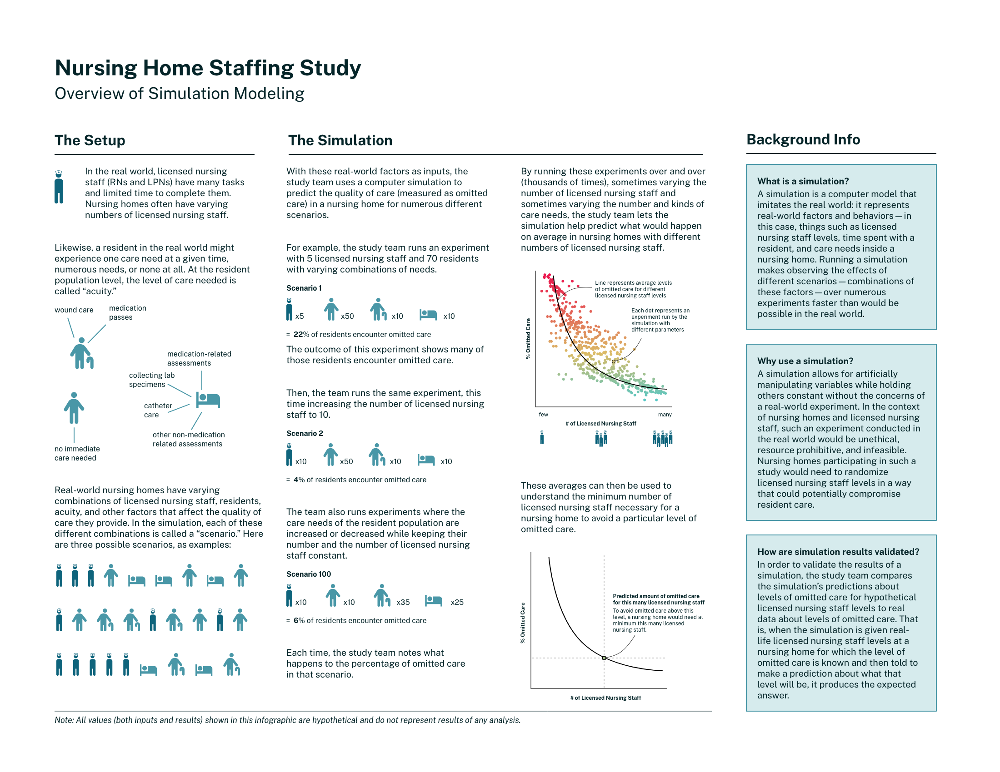
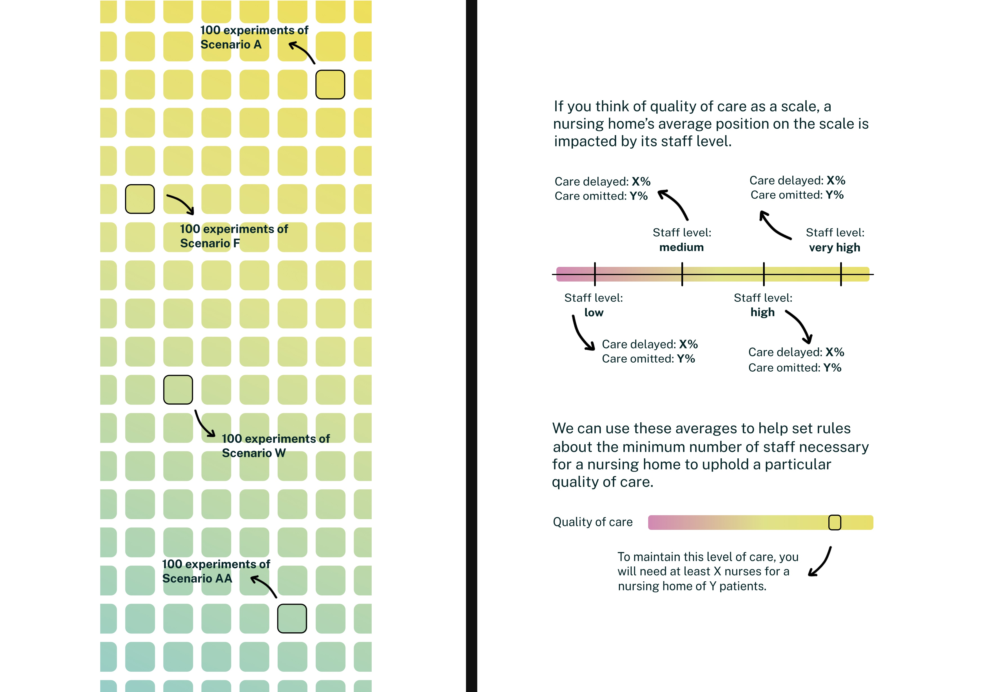
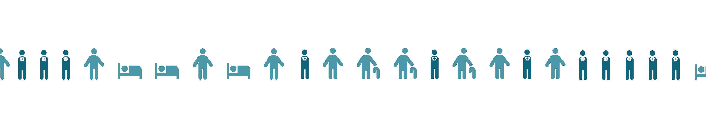

CMS Simulation Study Infographic
I developed an infographic for the Centers for Medicare and Medicaid Services (CMS) for a report about the effects of reduced nursing staff numbers on levels of patient care. I worked with the team who developed the computer simulation run to get the results in this study to develop and infographic that could communicate their process to healthcare professionals and government workers who may not be familiar with simulation studies. You can view the infographic in the pubished report here (in section 4).

The final infographic included in the report

Draft elements of the infographic not used in the final version

Icons used in the infographic to represent nursing staff and patients with different levels of needs